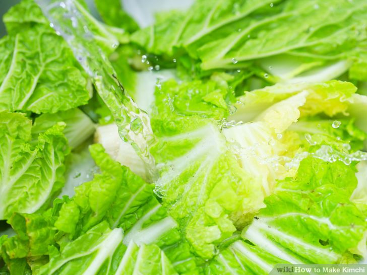

1 Wash your hands and all of the untensils and containers used before beginning.
There is a vital need for cleanliness,both of the jars and utensils you don't want to start breeding coliforms with your probiotics.
Kimchi and kombucha can grow mold due unsanitary practices.
 "
"
2 Dissolve the 3 tablespoons salt in the water.
3 Put the cabbageinto a large bowl,a crock,or a nonreactive pot,and pour the brine over it.
4 Weight the cabbage down with a plate.
Let the cabbage stand for 12 hours.

5 Drain the cabbage,reserving the brine.
Mix the cabbage with the remaining ingredients,including the 1 teaspoon salt.

6 Pack the mixture into a 2-quart jar.
Pour enough of the reserved brine over the cabbage to cover it. Push a freezer bag into the mouth of the jar,and pour the remaining brine into the bag.
Seal the bag.You may prefer to not add the plastic bag on the mouth of the jar.
The probiotics in kimchi are just like the ones in Kombucha.
They are both highly reactive to plastic,metal and anything with a PTFE coating inclluding Microban; these will break down under the probiotics and may poison you.
Also do not use any plastic utensils or metal utensils and containers(use wooden utensils) and use only glass to store Kimchi.
You can't buy Kimchi in a plastic jar for this reason.
Instead, simply put the coverr on the jar, leaving it loose and let it bubble and let it bubble over while fermenting.
When your kimchi is as sour as you like,simply tighten the cover and wash off the outside of the jar.
7 Let the kimchi ferment in a cool place at a temperature no higher than 68*F(20*C),for 3 to 6 days.
Allow to ferment until the kimchi is as sour as sour as you like.

8 Remove the brine bag,and cap the jar tightly.
Store the kimchi in the refrigerator where it will keep for months.

9 Finished.
| Contact Us | Follow Us |
| Phone Number:0942011231231 Email:foodparadise@gamil.com |
Copyright © 2017,Food Paradise. All Rights Reserved.